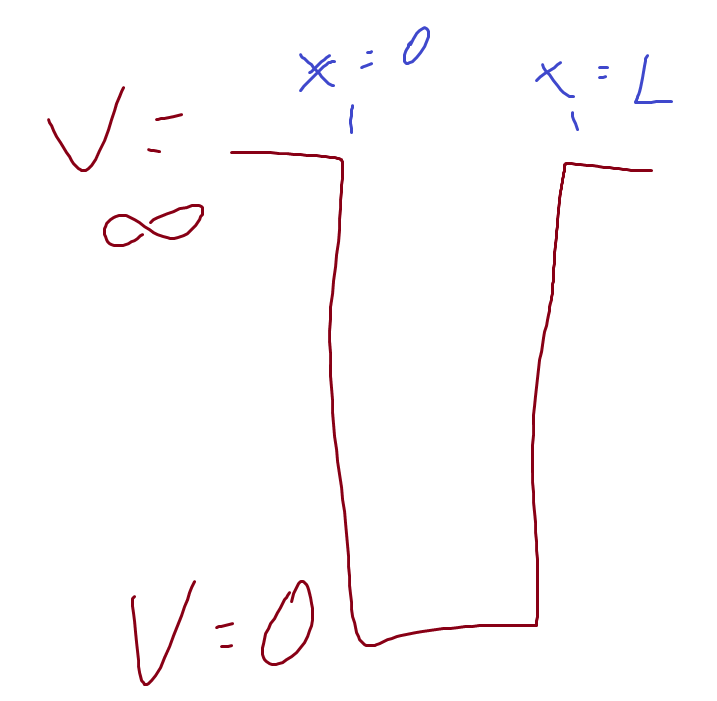
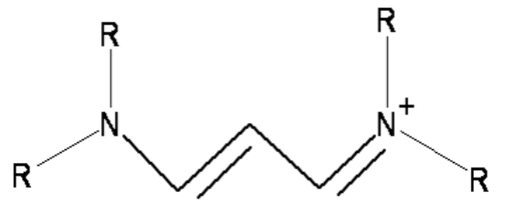
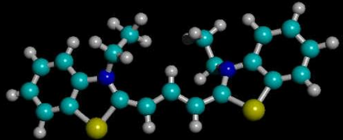
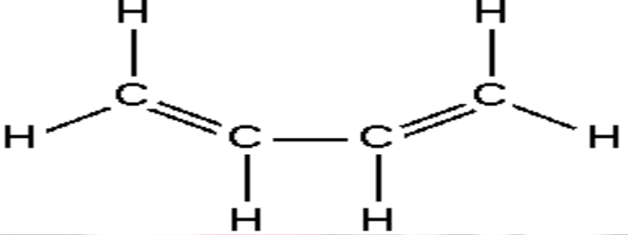

07-Shrodinger Equation
Particle in a Box
![]()
Summary
In our first application of the Schrödinger Equation, we’ll look at a particle in a 1 -dimensional box. This particle is at zero potential in the interval \(0 \leq x \leq a\) but cannot move outside these bounds.
Contents
- Time Dependent Schrödinger Equation
- Separation of Variables
- Time Independent Schrödinger Equation
- Boundary Conditions
- Nature of solutions
- linearity
- orthonormal
- basis set
- Square Examples
- conjugated dyes
- butadiene
- Selection Rules
Time Dependent Schrödinger Equation
- finished last week with the Time Dependent Schrödinger Equation
Lots of times the potential, V, doesn’t depend on time, just position.
There’s a neat trick called separation of variables we can use now.
- Get:
- Left hand side just depends on time, right hand side just on x
\(\implies\) both sides must be equal to some constant, call it E say
\(\implies\) got ourselves two equations here
Time Dependence
- Working with the left (time) side of the equation gives us:
- Solutions to this are fairly straightforward and not that interesting
- Gives temporal oscillations of the wavefunction
Time Independent Schrödinger Equation
On the other hand, the spatial element is rich in solutions, depends on shape of V(x)
Get
This is the time independent Schrödinger Equation
Turns out, when we compare to the free space version, that E is the total energy of the system.
Boundary Conditions
Solving problems using Time independent Schrödinger Equation means
Applying different natures of the potential, V
But also using boundary conditions, constraints on the wavefunction that tell us about the possible solutions
Wavefunction must be a continuous single valued function of position and time
The integral of the squared value of the wavefunction over all values of x must be finite (normalisable)
The first derivatives of the wavefunction in x must be continuous everywhere except when there is an infinite discontinuity in the potential
We’ll first look at the nature of solutions to Schrödinger’s Equation, and then tackle some examples and put Schrödinger to work
Solutions of Schrödinger’s Equation
Equation is linear in \(\psi\)
Superposition principle, if \(\psi_1\) and \(\psi_2\) are solutions then so is \(\psi_1 + \psi_2\)
- and indeed \(A\psi_1 + B\psi_2\)
Solution solved by eigenfunctions, \(\psi_n\), and corresponding eigenvalues, \(E_n\)
Set of all solutions forms an orthogonal basis set
\(\int \psi_n \psi_m dx = 0 \;if \; n \neq m\)
Can make up any function from linear combination of \(\psi\)’s
- \(F(x) = \Sigma \psi_n\)
Examples of Time Independent Schrödinger Equation
Infinite square well
Finite square well
Harmonic oscillator
All of these are 1-D
We’ll advance to 3-D later
– Hydrogen atom
– etc
Infinite Square Well (Particle in a Box)
V(x) has the form
V = 0 when \(0<x<L\)
V = \(\infty\) when \(x<0 \; or\; x>L\)

Infinite Square Well - Solutions
- Within the well, the Schrödinger Equation becomes:
- General solution has the form
- Where
ISW - Boundary Conditions
- Boundary conditions dictate \(\psi\) that vanishes at 0 and L
First condition must mean A=0
- If A=0 then \(\sin(kL) = 0\) and \(k = n\pi /L\), n=1, 2, 3..
- (not n = 0 because that would give \(\psi = 0\) everywhere)
- If A=0 then \(\sin(kL) = 0\) and \(k = n\pi /L\), n=1, 2, 3..
Means \(E_n = \frac{\hbar^2 \pi^2 n^2}{2mL^2}\)
when we normalise we get
\(\psi_n = \sqrt{2/L} \sin(n\pi x /L)\)
Conjugated Dyes


Planar cations
Number of carbons in chain varies
End group (R) can be \(H\), \(CH_3\), etc
Carbon chain acts like infinite square well
- delocalised pi electrons over the length of the molecule between N ions
- Free-Electron Molecular Orbital Model
- Potential looks like this:
- spectra looks like this:
Spectra of Conjugated Dyes
Absorption caused by transition from highest filled orbital (\(n_{HFO}\)) to lowest unfilled orbital (\(n_{LUO}\))
- Get one electron from each carbon plus three from the nitrogens
- N = (no of carbons) + 3
\(n_{HFO} = N/2\) and \(n_{LUO} = N/2 + 1\) (Pauli Exclusion)
Remember \(E_n = \frac{\hbar^2 \pi^2 n^2}{2mL^2}\) for infinite square well \(\Delta E = E_{LUO} – E_{HFO} = \frac{\hbar^2 \pi^2n_{LUO}^2}{2mL^2} - \frac{\hbar^2 \pi^2n_{HFO}^2}{2mL^2}\)
\(\implies \Delta E = \frac{\hbar^2 \pi^2}{2mL^2} (n_{LUO}^2 - n_{HFO}^2)\)
\(\implies \Delta E = \frac{\hbar^2 \pi^2}{2mL^2} [(\frac{N}{2} + 1)^2 - (\frac{N}{2})^2]\)
\(\implies \Delta E = \frac{\hbar^2 \pi^2}{2mL^2} (N + 1)\)
\(\Delta E = 6.024 \times10^{-38} (N+1)/ L^2\)
taking \(h=6.626 \times 10^{-34}Js\) and \(m_e = 9.11 \times 10^{-31}kg\)
\(\Delta E = 6.024 \times10^{-38} (N+1)/ L^2\)
Application to dyes on slide 17 gives:
- L for 3 carbons is 0.809nm
- L for 5 carbons is 1.056nm
- L for 7 carbons is 1.307nm
Compares OK with C-C bond length of 0.146nm and C=C bond length of 0.134nm
(remember \(E = \frac{hc}{\lambda}\))
Spectrum of Butadiene
Four carbon molecule
Four \(\pi\) electrons, N=4
Get \(\Delta E = \frac{\hbar^2 \pi^2 n^2}{2mL^2}(N+1) = \frac{5 \hbar^2 \pi^2}{2mL^2}\)

Length of molecule is (two double bonds) + (one single bond) + (a bit more at each end, say a total of a single bond)
This gives L = 0.56nm
Then \(E = 9.61 \times 10^{-19}J\)
And \(\lambda_{max}\) = 207nm
Compares to experimental value of 210nm
Got to admit agreement is pretty lucky, but still shows power of QM
Selection Rules for Square Well
Not all transitions allowed, some have probability=0
We’ll work out these selection rules for the infinite square well potential
We’ll also show how longer molecules have stronger absorbtion
Incident light causes transition from occupied level to higher previously unoccupied level
Absorbs energy from light beam
Strength of light-molecule interaction depends on electric dipole moment of molecule
\(\epsilon = - \mu .E\) where \(\mu\) is dipole moment
\(\mu = \Sigma x_i e_i\) where x is position and e is charge
Light has long wavelength so E doesn’t depend on x
- In quantum mechanics, the transition dipole moment is given by:
When we evaluate this integral for the wavefunctions of the square well, we can see which ones disappear
They disappear because integral = 0 because of symmetry
These will be forbidden transitions
\(\mu = - \int_0^L \psi_{final} \; ex\; \psi_{initial}\; dx\)
\(\implies \mu = - \frac{2e}{L} \int_0^L x \sin(\frac{n_{final} \pi x}{L}) \; \sin(\frac{n_{initial} \pi x}{L})\; dx\)
- but \(\sin(x) \sin(y) = \frac{1}{2} [ \cos(x-y) - \cos(x+y)]\)
\(\implies \mu = - \frac{e}{L} \int_0^L x [\cos(\frac{ \pi x ( n_{final} - n_{initial})}{L}) \;- \; \cos(\frac{ \pi x ( n_{final} + n_{initial})}{L})]\; dx\)
do this integration by parts using u = x and \(dv = \cos(x)dx\)
gives \(\int_0^L x\; \cos(ax)\; dx = [\frac{x}{a} \sin(ax) + \frac{1}{a^2}\cos(ax)]_0^L\)
then
\(\mu = - \frac{e}{L} (\frac{L}{\pi})^2[\frac{1}{n_{diff}^2}(\cos(n_{diff}\pi)-1) - \frac{1}{n_{total}^2}(\cos(n_{total}\pi)-1)\)
\(+ \frac{\pi}{n_{diff}} \sin(n_{diff}\pi) - \frac{\pi}{n_{total}} \sin(n_{total}\pi)]\)
where \(n_{diff} = n_{final} - n_{initial}\) and \(n_{total} = n_{final} + n_{initial}\)
See what happens when n is even or odd
- if n is even then \(\cos(n\pi) - 1 = 0\) and \(\sin(n\pi) = 0\)
\(\implies \mu = 0\) when \(n_{diff}\) is even and \(n_{total}\) is even
- this happens if both \(n_{initial}\) and \(n_{final}\) are both even or both odd
-on the other hand if one of \(n_{initial}\) and \(n_{final}\) is even and the other odd
This all means:
- No transition if initial and final state have same parity
- i.e. both even or both odd
- Transition if initial and final states have opposite parity
- (\(n_{initial} – n_{final}\)) must be odd
- Transition strength increases with L
- Long molecules absorb strongly
- See spectra on page 17
- No transition if initial and final state have same parity
Equations
- \(i \hbar \frac{\partial T}{\partial t} = E \times T(t)\)
- \(T(t) = A e^{-iEt/\hbar}\)
- \(- \frac{\hbar^2}{2m} \frac{\partial ^2 \psi}{\partial x^2} + V(x) \psi = E \psi\)
- \(\psi_n = \sqrt{2/L} \sin(n\pi x /L)\)
- \(E_n = \frac{\hbar^2 \pi^2 n^2}{2mL^2}\)
- \(\Delta E = \frac{\hbar^2 \pi^2}{2mL^2} (N + 1)\)
- \(\mu = \frac{2eL}{\pi^2}[\frac{1}{n_{diff}^2} - \frac{1}{n_{total}^2}]\)
References

Physics - Quantum